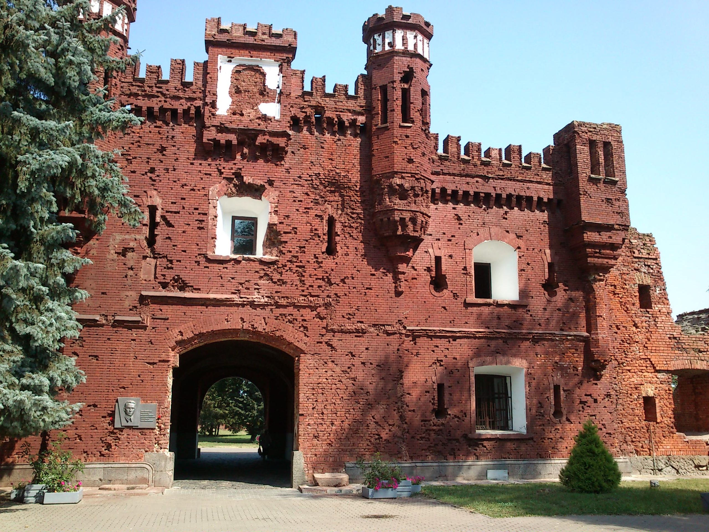
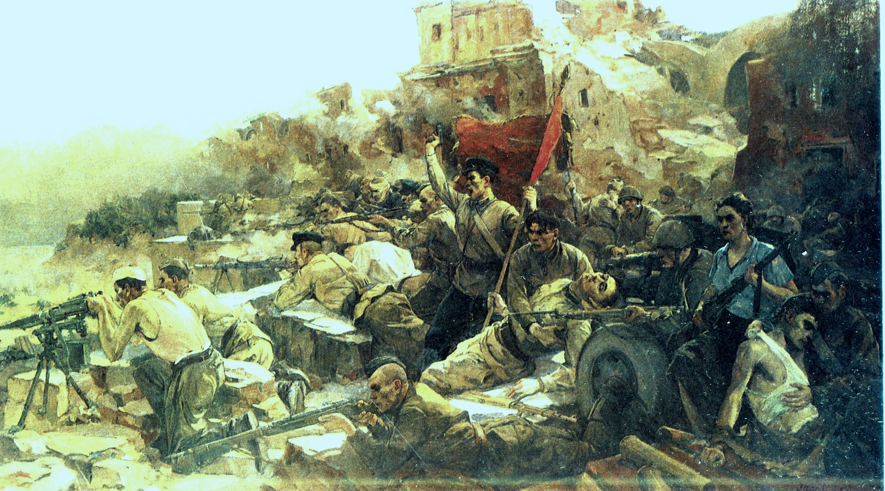
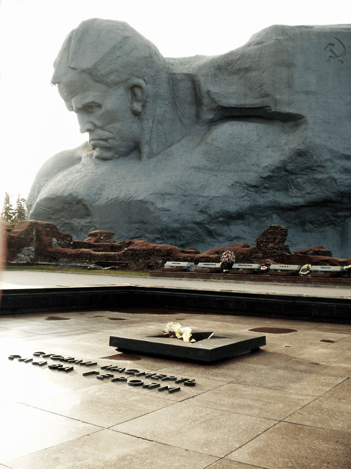
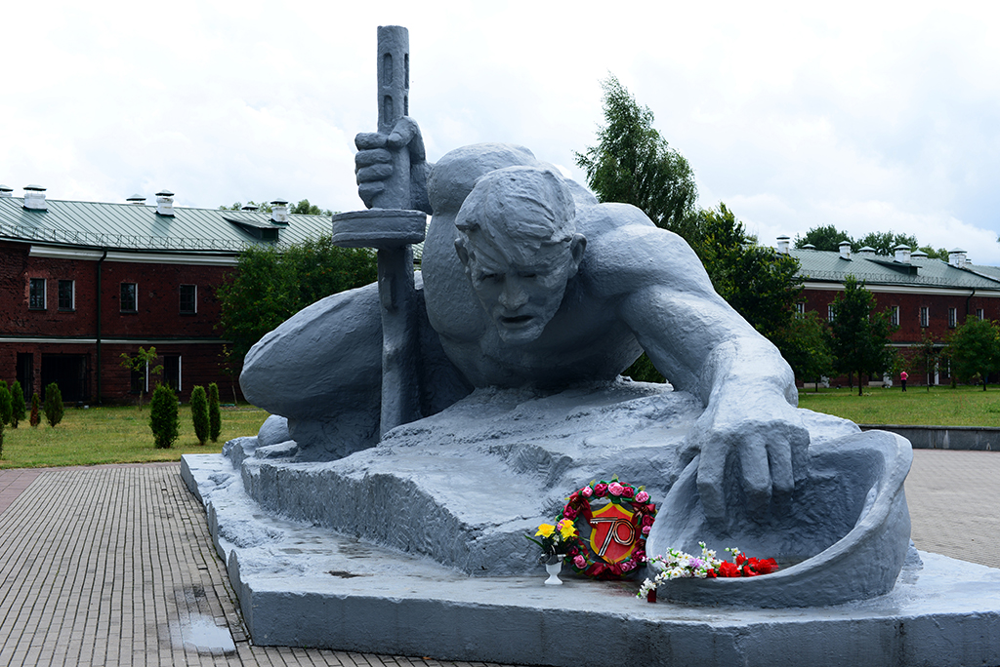

Легендарная Брестская крепость навсегда вошла в историю как цитадель бессмертного подвига, где каждый камень хранит память о невероятном героизме советских солдат в первые дни Великой Отечественной войны.

Мемориальный комплекс "Брестская крепость-герой".
Строительство Брест-Литовской крепости началось в 1833 году по приказу императора Николая I, а торжественное открытие первоклассной цитадели Российской империи состоялось в 1842 году. Главной и самой драматичной вехой в её истории стала героическая оборона в июне — июле 1941 года, когда застигнутый врасплох советский гарнизон сковал значительные силы гитлеровских войск и проявил беспримерное мужество. За этот бессмертный подвиг в 1965 году крепости было присвоено почетное звание «Крепость-герой», а в 1971 году на ее территории открылся величественный мемориальный комплекс.

Картина "Оборона Брестской крепости в 1941 году".
Картина «Оборона Брестской крепости» была написана советским художником-баталистом Петром Кривоноговым в 1951 году и стала одним из главных символов стойкости советских воинов. Мастер лично посетил разрушенную цитадель, чтобы с максимальной точностью воссоздать атмосферу ожесточенных боев у Тереспольских ворот. Сегодня это легендарное полотно, передающее драматизм первых дней войны, хранится в Центральном музее Вооруженных Сил РФ в Москве.

Вечные огни: Брестская крепость-герой.
Вечный огонь в Брестской крепости был торжественно зажжен 25 сентября 1971 года в день открытия грандиозного мемориального комплекса. Частицу пламени для него доставили от Вечного огня на площади Победы в Минске, а почетное право зажечь огонь в цитадели доверили Петру Климуку — первому белорусскому космонавту и уроженцу Брестчины. Священное пламя горит в самом сердце мемориала, у подножия штыка-обелиска, в окружении гранитных плит, под которыми покоятся останки защитников крепости. Сегодня у этого мемориала несут почетную вахту памяти брестские школьники, сохраняя живую связь поколений.

Монумент «Жажда» в Брестской крепости.
Монумент «Жажда» был открыт в 1971 году в составе мемориального комплекса и посвящен драматическому эпизоду обороны, когда защитники крепости, лишенные водопровода и блокированные немецким огнем у реки, гибли в попытках добыть глоток воды. Скульптура длиной 13 метров изображает раненого советского бойца, который из последних сил ползет к реке Мухавец, опираясь на автомат и протягивая каску к воде.